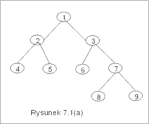

| « poprzedni punkt | nastêpny punkt » |
W poprzednim wyk³adzie poznali¶my trzy metody systematycznego odwiedzania wierzcho³ków drzew binarnych. Wszystkie trzy by³y procedurami rekurencyjnymi. Teraz rozwa¿ymy dwa inne sposoby poruszania siê po drzewach. Metody przedstawione w tym wyk³adzie maj± tê zaletê, ¿e mo¿na je stosowaæ do dowolnych grafów. Najpierw rozwa¿ymy je jednak w zastosowaniu do drzew binarnych. Pierwsza z nich to przegl±danie grafu wszerz, a druga w g³±b.
Metoda "wszerz"
Idea algorytmu polega na przegl±daniu wierzcho³ków drzewa poziomami i st±d angielska nazwa Bredth First Search, w skrócie BFS. Zaczynamy od odwiedzenia korzenia drzewa. Nastêpnie przegl±damy wierzcho³ki odleg³e od korzenia o jedn± krawêd¼ (tzn. nastêpniki korzenia) np. od lewej do prawej. W kolejnym kroku przegl±damy wierzcho³ki odleg³e od korzenia o 2 krawêdzie itd. Nastêpniki odwiedzanych wierzcho³ków zapamiêtujemy, aby móc je odwiedziæ w nastêpnym kroku, w takim samym porz±dku, w jakim byli odwiedzani ich ojcowie. Do tego celu u¿yjemy kolejki. Dziêki takiej organizacji, je¶li wierzcho³ek v by³ odwiedzony przed wierzcho³kiem u, to synowie wierzcho³ka v te¿ bêd± odwiedzeni przed synami wierzcho³ka u.
Algorytm BFS
Za³ó¿my, ¿e q jest pust± kolejk± o elementach typu node, a root jest korzeniem etykietowanego drzewa binarnego, którego wierzcho³ki chcemy odwiedziæ. Zak³adamy, ¿e ka¿dy wierzcho³ek drzewa jest obiektem typu node, jaki opisano w wyk³adzie VI p.4. U¿yta w algorytmie instrukcja write ma za zadanie wypisanie warto¶ci zmiennej, która jest jej argumentem. W konkretnych zastosowaniach instrukcja ta jest zastêpowana odpowiednim programem obs³ugi tego wierzcho³ka. Tu jednak chcemy siê skupiæ jedynie na kolejno¶ci odwiedzania wierzcho³ków drzewa.
| BFS(root : node) { | |||
| q := in(root, q); | |||
| while (not empty(q)) do | // dopóki kolejka q nie jest pusta | ||
| v := first(q); | |||
| write(v.val); | // wypisujemy etykietê pierwszego wierzcho³ka w kolejce | ||
| q := out(q); | |||
| if (v.left ¹ null) then q := in(v.left,q); fi; | // dopisujemy do kolejki nastêpniki | ||
| if (v.right ¹ null) then q := in(v.right,q); fi; | //odwiedzonych wierzcho³ków | ||
| od; | |||
| } | |||
Przyk³ad 1.1
Niech warto¶ci± zmiennej root bêdzie korzeñ drzewa przedstawionego na rysunku 7.1(a) (tzn. warto¶ci± zmiennej root jest wierzcho³ek z etykiet± 1). Algorytm BFS zastosowany do tego drzewa daje w wyniku nastêpuj±c± kolejno¶æ etykiet: 1,2,3,4,5,6,7,8,9. Aby prze¶ledziæ dzia³anie algorytmu przyjrzyjmy siê bli¿ej kolejnym stanom kolejki q (por. rysunek 7.1(b)). Na pocz±tku kolejka zawiera tylko korzeñ drzewa. W kolejnych iteracjach (opisanych w kolejnych wierszach na rysunku 7.1(b)), wyjmujemy z kolejki pierwszy wierzcho³ek, wypisujemy jego etykietê, a do kolejki wk³adamy synów tego wierzcho³ka, tzn. wierzcho³ki 2 i 3 s± dopisane do koñca kolejki. Poniewa¿ pierwszym wierzcho³kiem w kolejce jest teraz 2, wiêc etykieta 2 zostanie wypisana, a do kolejki zostan± dopisani synowie wierzcho³ka 2, tzn. wierzcho³ki 4 i 5 . Teraz na pocz±tku kolejki znajduje siê wierzcho³ek 3. Wypisujemy jego etykietê i usuwamy go z kolejki. Do kolejki natomiast dopisujemy synów wierzcho³ka 3, czyli 6 i 7. W kolejnym kroku na pocz±tku kolejki znajduje siê wierzcho³ek 4. Do kolejki w tym kroku nie dopiszemy nowych wierzcho³ków, bo wierzcho³ek 4 nie ma ani lewego, ani prawego syna itd.
|  | Kolejne stany kolejki q: | ||||||||||||||||||
| 1 | |||||||||||||||||||
| 2 | ® | 3 | |||||||||||||||||
| 3 | ® | 4 | ® | 5 | |||||||||||||||
| 4 | ® | 5 | ® | 6 | ® | 7 | |||||||||||||
| 5 | ® | 6 | ® | 7 | |||||||||||||||
| 6 | ® | 7 | |||||||||||||||||
| 7 | |||||||||||||||||||
| 8 | ® | 9 | |||||||||||||||||
| 9 | |||||||||||||||||||
| Rysunek 7.1(b) | |||||||||||||||||||
Analiza poprawno¶ci algorytmu
Chcemy uzasadniæ, ¿e w algorytmie BFS wszystkie wierzcho³ki drzewa zostan± odwiedzone i wszystkie etykiety wypisane. Oczywi¶cie korzeñ drzewa jest odwiedzony, a jego etykieta zostanie wypisana jako pierwsza. We¼my wierzcho³ek x na poziomie k tego drzewa i za³ó¿my, ¿e wszystkie wierzcho³ki znajduj±ce siê w tym drzewie na poziomach od 1 do k-1 zosta³y ju¿ wypisane. Niech y bêdzie ojcem wierzcho³ka x. Skoro etykieta wierzcho³ka y zosta³a wypisana, to znaczy, ¿e y znajdowa³ siê, w pewnym momencie, na pocz±tku kolejki q. Ale wtedy, do kolejki zosta³y dopisane nastêpniki wierzcho³ka y, czyli w szczególno¶ci wierzcho³ek x. W ka¿dej iteracji pêtli, usuwany jest jeden element z kolejki, zatem po skoñczonej liczbie kroków na pocz±tku kolejki znajdzie siê wierzcho³ek x i wtedy zostanie wypisana jego etykieta. Podobne rozumowanie mo¿na powtórzyæ dla dowolnego wierzcho³ka z poziomu k, wynika st±d na mocy zasady indukcji, ¿e wszystkie wierzcho³ki zostan± odwiedzone.
Do kolejki zawsze wpisujemy ojca przed synem, oraz najpierw wpisujemy lewy, a potem prawy nastêpnik dowolnego wierzcho³ka. Wynika st±d, ¿e zgodnie z w³asno¶ciami kolejki, najpierw zostan± wypisane wierzcho³ki bli¿sze korzeniowi (z poziomów o mniejszych numerach), a potem bardziej odleg³e od korzenia. Co wiêcej na pocz±tku kolejki pojawi siê lewy nastêpnik dowolnego wierzcho³ka, a dopiero po jego usuniêciu, prawy. Zatem ich etykiety te¿ pojawi± siê w takiej kolejno¶ci.
Koszt algorytmu BFS
Ka¿dy wierzcho³ek drzewa o korzeniu root jest tylko raz wpisywany do kolejki i tylko raz z niej usuwany, gdy stanie siê pierwszym elementem kolejki. Wynika st±d, ¿e liczba iteracji pêtli "while" jest równa liczbie wierzcho³ków drzewa. Zatem koszt algorytmu BFS, mierzony liczb± wykonanych operacji na kolejce wynosi Q(n), gdzie n jest liczb± wierzcho³ków drzewa.
Pytanie 1: Niech root bêdzie korzeniem drzewa binarnego o wysoko¶ci h. Do
wypisania etykiet tego drzewa u¿yto algorytmu BFS. Ile co najwy¿ej elementów
mo¿e znajdowaæ siê równocze¶nie w kolejce q?
Metoda "najpierw w g³±b"
Idea tego algorytmu polega na przegl±daniu wierzcho³ków drzewa wzd³u¿ ga³êzi od korzenia do li¶ci drzewa, jak wskazuje nazwa Depth First Search, w skrócie DFS. Przesuwamy siê najpierw wzd³u¿, np. lewej ga³êzi, przechodz±c stale do lewego nastêpnika. Gdy kontynuowanie przej¶cia w lewo nie jest mo¿liwe, zaczynamy przegl±daæ prawe poddrzewo ostatnio odwiedzonego wierzcho³ka. Zapamiêtujemy mijane wierzcho³ki, aby móc pó¼niej odwiedziæ ich prawe poddrzewa. U¿yjemy do tego celu struktury stosu.
Algorytm DFS
Za³ó¿my, ¿e s jest stosem pocz±tkowo pustym, a root jest korzeniem drzewa binarnego.
| DFS ( root : node){ | |||
| s := push(root, s); | |||
| while (not empty(s)) do | // dopóki stos nie jest pusty | ||
| v := top(s); | |||
| write(v.val); | // wypisz etykietê wierzcho³ka ze szczytu | ||
| s := pop(s); | // usuñ ten wierzcho³ek | ||
| if (v.right ¹ null) then s := push(v.right,s); fi; | // dopisz jego synów do stosu | ||
| if (v.left ¹ null) then s := push(v.left,s); fi; | |||
| od; | |||
| } | |||
Przedstawiony algorytm niewiele siê ró¿ni od algorytmu BFS. Podstawowa ró¿nica to typ u¿ytej struktury pomocniczej. Zauwa¿my te¿, ¿e na stos dostaje siê zawsze najpierw prawy nastêpnik, a potem lewy. Nie ma to wielkiego znaczenia, ale umo¿liwia przegl±danie wierzcho³ków od strony lewej w kierunku prawej. Pamiêtajmy, ¿e porz±dek wk³adania elementów na stos jest odwrotny do porz±dku ich zdejmowania ze stosu.
Przyk³ad 1.2
Rozwa¿my drzewo z przyk³adu 7.1(a). Na rysunku 7.2 przedstawili¶my kolejne stany stosu s w trakcie wykonywania algorytmu DFS. Na pocz±tku do stosu jest w³o¿ony korzeñ drzewa. W pierwszym kroku pêtli wypisujemy jego etykietê i usuwamy go. Do stosu natomiast wpisujemy jego synów: najpierw prawego syna, a potem lewego. Dziêki temu, to w³a¶nie lewy nastêpnik, wierzcho³ek 2 jest na szczycie stosu w nastêpnym kroku. Po wypisaniu jego etykiety usuwamy go ze stosu, a na jego miejsce wpisujemy nastêpniki: wierzcho³ek 5 i wierzcho³ek 4. Teraz na szczycie stosu znajduje siê wierzcho³ek 4, itd
| 4 | |||||||||||||||||||
| ¯ | |||||||||||||||||||
| 2 | 5 | 5 | 6 | 9 | |||||||||||||||
| ¯ | ¯ | ¯ | ¯ | ¯ | |||||||||||||||
| 1 | 3 | 3 | 3 | 3 | 7 | 7 | 8 | 9 | |||||||||||
| Rysunek
7.2 Kolejne stany stosu w trakcie realizacji algorytmu DFS dla drzewa z rysunku 7.1(a). |
|||||||||||||||||||
Analiza poprawno¶ci algorytmu
Zauwa¿my najpierw, ¿e algorytm zatrzymuje siê po skoñczonej liczbie iteracji. Rzeczywi¶cie, wierzcho³ek raz usuniêty ze stosu nigdy na ten stos ponownie nie wraca. Drzewo ma skoñczon± liczbê wierzcho³ków, wiêc po skoñczonej liczbie iteracji wszystkie wierzcho³ki zostan± usuniête ze stosu. Trzeba jeszcze uzasadniæ, ¿e ka¿dy wierzcho³ek zostanie odwiedzony (tzn. znajdzie siê na szczycie stosu), a ci±g otrzymany w wyniku zawiera wszystkie etykiety tego drzewa. Je¶li jaki¶ wierzcho³ek zosta³ wpisany na stos, to po skoñczonej liczbie kroków znajdzie siê on na szczycie stosu, a jego etykieta zostanie wypisana. Gdyby wierzcho³ek x nale¿a³ do drzewa o korzeniu root, ale nie by³ odwiedzony w algorytmie DFS, to ojciec tego wierzcho³ka, nazwijmy go y, nie móg³by byæ wpisany na stos (w przeciwnym bowiem razie, po skoñczonej liczbie kroków by³by on na szczycie stosu, a wtedy do stosu, zgodnie z instrukcjami algorytmu, wpisano by jego nastêpniki, czyli równie¿ x). Podobnie ojciec wierzcho³ka y te¿ nie móg³ byæ wpisany na stos w procesie DFS. Wynika s±d, ¿e ¿aden poprzednik wierzcho³ka x na ¶cie¿ce od korzenia do x, nie móg³by byæ wpisany na stos. Prowadzi to do sprzeczno¶ci, bo root jest wk³adany na stos jako pierwszy element.
Jest oczywiste, ¿e wierzcho³ki, które s± w³a¶nie dopisane do stosu zostan± odwiedzone wcze¶niej ni¿ te, które na tym stosie ju¿ siê znajduj±. Je¶li w pewnej chwili wierzcho³ek x znajdzie siê na szczycie stosu, to zostanie usuniêty, a na jego miejsce zostan± wpisani jego synowie: najpierw prawy syn, a potem lewy. Wynika st±d, ¿e nastêpnym odwiedzonym wierzcho³kiem bêdzie lewy syn wierzcho³ka x, a do stosu zostan± dopisane jego nastêpniki. Ostatecznie, zanim prawy syn wierzcho³ka x znajdzie siê na szczycie stosu, zostan± odwiedzone wszystkie wierzcho³ki z lewego poddrzewa wierzcho³ka x.
Koszt algorytmu
Ka¿dy wierzcho³ek drzewa jest dok³adnie raz wk³adany na stos i usuwany z niego, gdy znajdzie siê na szczycie stosu. Wynika st±d, ¿e liczba operacji na stosie jest proporcjonalna do liczby wierzcho³ków drzewa n i wynosi Q(n).
Pytanie 2: Ile co najwy¿ej elementów mo¿e
siê znajdowaæ równocze¶nie na stosie w trakcie przegl±dania drzewa binarnego o
wysoko¶ci h za pomoc± algorytmu DFS?
Idea przegl±dania wierzcho³ków drzewa "wszerz " i "w g³±b" mo¿e zostaæ uogólniona na dowolne grafy. Warto zapamiêtaæ obie te metody, gdy¿ bêd± przez nas wykorzystywane w innych wa¿nych algorytmach na grafach. Niech r bêdzie ustalonym wierzcho³kiem grafu G, zwanym ¼ród³em. Przegl±danie "wszerz" oznacza, ¿e najpierw odwiedzamy wszystkie te wierzcho³ki x, dla których istnieje ¶cie¿ka od ¼ród³a o d³ugo¶ci i, a potem te bardziej oddalone od ¼ród³a, dla których najkrótsza ¶cie¿ka od ¼ród³a ma d³ugo¶æ i+1. Przegl±danie "w g³±b" oznacza, ¿e idziemy wzd³u¿ jednej ¶cie¿ki tak daleko, jak to jest mo¿liwe (oddalaj±c siê stale od ¼ród³a). Je¶li napotkamy wierzcho³ek, którego wszystkie nastêpniki by³y ju¿ odwiedzone, lub wierzcho³ek, który nie ma nastêpników, wykonujemy krok powrotny, szukaj±c pierwszego wierzcho³ka, z którego prowadzi inna droga w g³±b grafu. Je¶li graf jest niezorientowany, to przegl±danie "wszerz" lub "w g³±b" pozwalaj± odwiedziæ tylko tê spójn± czê¶æ grafu, w której znajduje siê ¼ród³o. Odwiedzanie trzeba powtórzyæ dla ka¿dej spójnej czê¶ci grafu, je¶li nie wszystkie wierzcho³ki zosta³y jeszcze odwiedzone.
Niech G = <V, E, et> bêdzie niezorientowanym, prostym, etykietowanym grafem spójnym, a w jego wyró¿nionym wierzcho³kiem. Zak³adamy, ¿e wierzcho³ki grafu s± ponumerowane liczbami naturalnymi od 1 do n oraz TAB jest tablic± list incydencji tego grafu. Niech ¼ród³em bêdzie wierzcho³ek o numerze w. Dla dowolnego v, TAB[v] wskazuje pierwsze ogniwo listy incydencji wierzcho³ka v. Ka¿de ogniwo ma atrybut next, który wskazuje nastêpny element listy (por. wyk³ad VI p.3). Dodatkowo, booleowska tablica InQueue wskazuje, czy wierzcho³ek by³ ju¿ wpisany do kolejki, czy te¿ nie. Ta informacja pozwala unikn±æ ponownego wpisania tego samego wierzcho³ka do kolejki, a co za tym idzie pozwala unikn±æ zapêtlenia. Tak jak poprzednio, zak³adamy, ¿e kolejka q s³u¿y do przechowywania wierzcho³ków grafu i jest pocz±tkowo pusta. Algorytmy BFS mo¿na zapisaæ nastêpuj±co:
| BFS_G { | |||
| for i := 1 to n do InQueue[i] := false od; | // pocz±tkowo, w kolejce nie ma ¿adnego wierzcho³ka | ||
| q := in(w, q); InQueue[w] := true; | |||
| while (not empty(q)) do | // dopóki kolejka q nie jest pusta | ||
| v := first(q); write(v); | |||
| q := out(q); | // wypisujemy etykietê pierwszego wierzcho³ka w kolejce | ||
| ogniwo := TAB[v]; | |||
| while (ogniwo ¹ null) do | // dopisujemy do kolejki wierzcho³ki s±siaduj±ce z v | ||
| x := ogniwo.val; | |||
| if (not InQueue[x]) then | //je¶li wierzcho³ek nie jest zamarkowany | ||
| q := in(x,q); InQueue[x] := true; | //dopisz go do kolejki i zamarkuj | ||
| fi; | |||
| ogniwo := ogniwo.next; | // we¼ nastêpny wierzcho³ek z listy incydencji v. | ||
| od; | |||
| od; | |||
| } | |||
Warto zwróciæ uwagê na koszt tego algorytmu. Przegl±damy listy incydencji, a wiêc krawêdzie grafu G i tak jak poprzednio, wpisujemy ka¿dy napotkany wierzcho³ek do kolejki, o ile nie by³ ju¿ do niej wcze¶niej wpisany. Wynika st±d, ¿e koszt jest proporcjonalny do sumy d³ugo¶ci list incydencji, a zatem koszt algorytmu mo¿emy oszacowaæ przez O(m), gdzie m jest liczb± krawêdzi grafu. Zwróæmy uwagê, ¿e liczba krawêdzi grafu wynosi co najmniej n-1 (bo graf jest z za³o¿enia spójny) i co najwy¿ej n(n-1)/2, bo graf jest niezorientowany i prosty.
Zapisanie szczegó³ów algorytmu DFS dla dowolnego grafu pozostawiamy Czytelnikowi.
Pytanie 3: W jakiej kolejno¶ci zostan±
wypisane etykiety wierzcho³ków drzewa binarnego przedstawionego na rysunku
6.9(a), je¶li zastosowano algorytm DFS, a jaki, je¶li zastosowano algorytm
DFS?
| « poprzedni punkt | nastêpny punkt » |